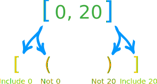
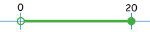
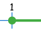
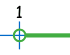
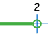
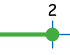
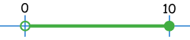
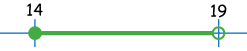
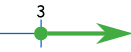
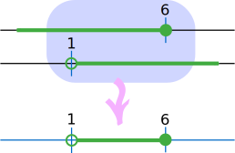

Intervals
Interval: all the numbers between two given numbers.
Example: all the numbers between 1 and 6 is an interval
All The Numbers?
Yes. All the Real Numbers that lie between those 2 values.
Example: the interval 2 to 4 includes numbers such as:
| 2.1 | 2.1111 | 2.5 | 2.75 | 2.80001 |
π
|
7/2 | 3.7937 |
And lots more!
Including the Numbers at Each End?
Ahh ... maybe yes, maybe no ... we need to say!
Example: "boxes up to 20 kg in mass are allowed"
If your box is exactly 20 kg ... will that be allowed or not?
It isn't really clear.
Let's see how to be precise about this in each of three popular methods:
- Inequalities
- The Number Line
- Interval Notation
Inequalities
With Inequalities we use:
- > greater than
- ≥ greater than or equal to
- < less than
- ≤ less than or equal to
Like this:
Example: x ≤ 20
Says: "x less than or equal to 20"
And means: up to and including 20
Interval Notation
In "Interval Notation" we just write the beginning and ending numbers of the interval, and use:
- [ ] a square bracket when we want to include the end value, or
- ( ) a round bracket when we don't
Like this:

Example: (5, 12]
Means from 5 to 12, do not include 5, but do include 12
Number Line
With the Number Line we draw a thick line to show the values we are including, and:
- a filled-in circle when we want to include the end value, or
- an open circle when we don't
Like this:
Example:

means all the numbers between 0 and 20, do not include 0, but do include 20
All Three Methods Together
Here is a handy table showing all 3 methods (the interval is 1 to 2):
| From 1 | To 2 | ||||
| Including 1 | Not Including 1 | Not Including 2 | Including 2 | ||
| Inequality: | x ≥ 1
"greater than or equal to" |
x > 1
"greater than" |
x < 2
"less than" |
x ≤ 2
"less than or equal to" |
|
| Number line: |  |  |  |  | |
| Interval notation: | [1 | (1 | 2) | 2] | |
Example: to include 1, and not include 2:
| Inequality: |
x ≥ 1 and x < 2 or together: 1 ≤ x < 2
|
| Number line: | |
| Interval notation: | [1, 2) |
More Examples
Example 1: "The Nothing Over $10 Sale"
That means up to and including $10.
And it is fair to say all prices are more than $0.00.
As an inequality we show this as:
Price ≤ 10 and Price > 0
In fact we could combine that into:
0 < Price ≤ 10
On the number line it looks like this:

And using interval notation it is simply:
(0, 10]
Example 2: "Competitors must be between 14 and 18"
So 14 is included, and "being 18" goes all the way up to (but not including) 19.
As an inequality it looks like this:
14 ≤ Age < 19
On the number line it looks like this:

And using interval notation it is simply:
[14, 19)
Isn't it funny how we measure age quite differently from anything else? We stay 18 right up until the moment we are fully 19. We don't we say we are 19 (to the nearest year) from 18½ onwards.
Open or Closed
The terms "Open" and "Closed" are sometimes used when the end value is included or not:
| (a, b) | a < x < b | an open interval | ||
| [a, b) | a ≤ x < b | closed on left, open on right | ||
| (a, b] | a < x ≤ b | open on left, closed on right | ||
| [a, b] | a ≤ x ≤ b | a closed interval |
These are intervals of finite length. We also have intervals of infinite length.
To Infinity (but not beyond!)
We often use Infinity in interval notation.
Infinity is not a real number, in this case it just means "continuing on ..."
Example: x greater than, or equal to, 3:
[3, +∞)

Note that we use the round bracket with infinity, because we don't reach it!
There are 4 possible "infinite ends":
| Interval | Inequality | |||
| (a, +∞) | x > a | "greater than a" | ||
| [a, +∞) | x ≥ a | "greater than or equal to a" | ||
| (-∞, a) | x < a | "less than a" | ||
| (-∞, a] | x ≤ a | "less than or equal to a" |
We could even show no limits by using this notation: (-∞, +∞)
Two Intervals
We can have two (or more) intervals.
Example: x ≤ 2 or x >3
On the number line it looks like this:
And interval notation looks like this:
(-∞, 2] U (3, +∞)
We used a "U" to mean Union (the joining together of two sets).
|
Note: be careful with inequalities like that one. 2 ≥ x > 3 that doesn't make sense (you can't be less than 2 |
 wrong!
wrong!Union and Intersection
We just saw how to join two sets using "Union" (and the symbol ∪).
There is also "Intersection" which means "has to be in both". Think "where do they overlap?".
The Intersection symbol is an upside down "U" like this: ∩
Example: (-∞, 6] ∩ (1, ∞)
The first interval goes up to (and including) 6
The second interval goes from (but not including) 1 onwards.

The Intersection (or overlap) of those two sets goes from 1 to 6 (not including 1, including 6):
(1, 6]
Conclusion
- An Interval is all the numbers between two given numbers.
- Showing if the beginning and end number are included is important
- There are three main ways to show intervals: Inequalities, The Number Line and Interval Notation.
Footnote: Geometry, Algebra and Sets
You may not have noticed this ... but we have actually been using:
all in one subject. Isn't mathematics amazing?